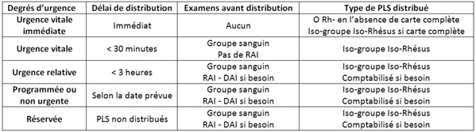
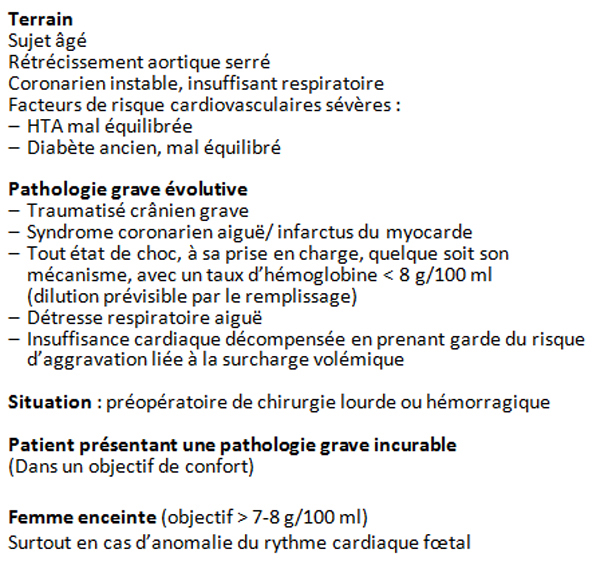
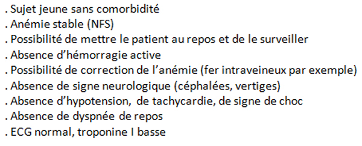

Transfusion de Culots Globulaires Rouges
AdulteSpécialité : vasculaire /
Points importants
- Chez un sujet jeune, sans co-morbidité, une anémie est généralement bien tolérée jusqu’à 6-7 gr/100 mL d’hémoglobine, en l’absence de saignement actif, et ce d’autant qu’elle s’est installée progressivement (ex : anémie ferriprive, Biermer)
- L’hémorragie est la principale cause de mortalité à la phase initiale de nombreuses urgences chirurgicales (polytraumatisé, hémorragie du post-partum, hémorragie digestive).
- Le retard de transfusion sanguine est responsable de décès évitables.
- L’absence de substitut au sang permettant le transport en oxygène rend la transfusion de produits sanguins labiles incontournable en cas d’hémorragie importante.
- La transfusion sanguine en urgence est un acte délicat, à haut risque de complications, qui nécessite, pour être convenablement réalisé, une bonne organisation des soins et de la rigueur, tant de la part des médecins que des infirmières
- Il existe une procédure officielle de demande de produits sanguins en urgence. Elle permet, en définissant précisément le degré d’urgence avec des termes pré-établis (urgence vitale immédiate, urgence vitale, urgence relative), de conditionner la rapidité de délivrance des produits sanguins labiles.
 fichier_603 Tableau Cotation du degré d'urgence pour la délivrance de PLS
- L’appréciation du degré d’urgence est de la responsabilité du clinicien. Le choix du type de CGR distribué (groupe, phénotype) est de la responsabilité de la banque du sang. Le respect de cette procédure permet de limiter les dysfonctionnements.
- L’indication transfusionnelle est posée sur l’évolutivité et l’importance de l’hémorragie, sa tolérance, le terrain et le taux d’hémoglobine. Ce dernier n’est qu’un élément parmi les autres.
- En cas d’hémorragie aiguë massive, il n’existe pas de marqueur clinique ou biologique permettant d’évaluer précisément le déficit en globules rouges d’un patient. Les deux risques sont de transfuser trop ou pas assez. Le deuxième est plus immédiatement menaçant.
- Dans chaque service, la réflexion sur la transfusion sanguine en urgence doit prendre en compte et anticiper le délai entre la prise de décision et le début effectif de la transfusion (prescription, acheminement de la demande, distribution des produits, acheminement des produits sanguins labiles [PSL]).
- Les risques de la transfusion sanguine ont évolué et sont encore mal connus des cliniciens
Indications
HEMORRAGIE AIGUE
Généralités
- Le but de la transfusion de CGR est de maintenir le transport en oxygène.
- Le remplissage vasculaire est initialement efficace en maintenant le débit cardiaque. Il est cependant rapidement délétère par hémodilution, aboutissant à un effondrement du taux d’hémoglobine rendant le transport d’oxygène impossible, quelque soit le débit.
- Plus l’hémorragie est massive, moins le remplissage sera longtemps efficace. L’indication transfusionnelle dépend donc de l’importance de l’hémorragie, de sa tolérance, du terrain, de la lourdeur des gestes thérapeutiques envisagés et du délai probable d’hémostase.
- En cas d’hémorragie aiguë sévère, le taux d’hémoglobine est un mauvais reflet de la perte sanguine car il dépend du taux d’hémoglobine initiale et du volume de remplissage
- En situation d’urgence, et devant un saignement massif, le taux d’hémoglobine n’est pas strictement indispensable pour prescrire une transfusion sanguine.
Indications transfusionnelles
-
Hémorragie aiguë non contrôlée quelle qu’en soit l’origine :
- si le taux d’hémoglobine est < 7 g/100 mL
- saignement important ou avec signes de mauvaise tolérance (appréciation de l’abondance d’une hémorragie) quelque soit le taux d’hémoglobine.
- saignement actif dont l’hémostase va être retardée
- saignement actif avec nécessité d’un transfert inter-hospitalier (transfert d’une hémorragie du post-partum pour embolisation par exemple)
- saignement actif avec indication d’un geste sous anesthésie générale (risque de désamorçage à l’induction) ou un geste invasif (fibroscopie oesogastroduodénale).
- si le terrain diminue la tolérance de l’anémie.
- Hémorragie contrôlée mais responsable d’une anémie mal tolérée
 fichier_604 Tableau Terrain, situation ou pathologie diminuant la tolérance à l'anémie
ANEMIE AIGUE NON HEMORRAGIQUE
Généralités
- En dehors de la crise drépanocytaire, dans laquelle la transfusion sert à contrôler la crise en « diluant » l’hémoglobine pathologique, l’indication transfusionnelle a pour but de réverser les signes de mauvaise tolérance
Indications
-
Crise drépanocytaire grave (transfusion sanguine le plus souvent en urgence ou exsanguino-transfusion si le taux d’hémoglobine est élevé) :
- syndrome thoracique aiguë
- signes neurologique, AVC
- insuffisance rénale aiguë
- crise résistant au traitement conventionnel (réchauffement, hyper-hydratation, oxygénothérapie, antalgiques)
- femme enceinte
- Accès pernicieux palustre avec anémie sévère (Hb < 6 g/100 mL) et mal tolérée
- Anémie hémolytique mécanique (valves cardiaque, micro-angiopathie thrombotique) mal tolérée.
- Anémie hémolytique auto-immune ou immuno-ellerggique (médicamenteuse) sévère (Hb < 6 g/100 mL) et mal tolérée. Le risque est d’aggraver l’hémolyse en apportant des CGR porteurs des antigènes concernés par la réaction immunitaire.
ANEMIE CHRONIQUE OU PEU EVOLUTIVE
Généralités
- Une anémie (ferriprive, carencielle, toxique, …) stable, et sans saignement actif, est une indication de transfusion si elle est « menaçante» c’est-à-dire avec signes de mauvaise tolérance, sur terrain fragile ou en raison d’une pathologie grave aiguë évolutive
- Le taux d’Hb à atteindre n’est pas démontré situation par situation et dépend essentiellement du terrain
- Le respect d’une anémie < 6 g/100 mL chez un sujet jeune n’est possible qu’en l’absence totale de signes de mauvaise tolérance et de saignement actif et en sous réserve de la possibilité de mise au repos complet du sujet et de l’existence d’un traitement alternatif efficace (fer intraveineux par exemple).
 fichier_605 Tableau Critères permettant de respecter une anémie inf. à 6 g/100 mL
Indications
-
Chez le sujet jeune, le but est de faire régresser les signes de mauvaise tolérance :
- tachycardie
- HoTA
- vertiges, céphalées, dyspnée, polypnée, douleur thoracique
- schémie ou lésion à l’ECG
- acidose métabolique lactique, augmentation de la troponine
-
En cas de pathologie aiguë grave ou de sujet fragile, l’objectif est classiquement fixé à 10 g/100 mL :
- fichier_604 Tableau Terrain, situation ou pathologie diminuant la tolérance à l'anémie
- sujet âgé
- rétrécissement aortique serré
- coronarien instable, insuffisant respiratoire
-
facteurs de risque cardiovasculaires sévères :
- HTA mal équilibrée
- diabète ancien, mal équilibré
-
Pathologie grave aiguë évolutive (objectif : Hb > 10 g/100 mL) :
- tout syndrome coronarien aigu
- traumatisé crânien grave.
- tout état de choc, à sa prise en charge, quel qu’en soit son mécanisme, avec un taux d’Hb < 8 g/100 mL (dilution prévisible par le remplissage).
- détresse respiratoire aiguë.
- insuffisance cardiaque décompensée en prenant garde au risque d’aggravation liée à la surcharge volémique.
- Grossesse évolutive (objectif 7-8 g/100 mL) surtout en cas d’anomalie du rythme cardiaque fœtal.
- Patient présentant une pathologie grave incurable dans un but de confort.
- Pré-opératoire de chirurgie lourde ou à fort risque hémorragique
Caractéristiques et choix du type de culot globulaire rouge
- Tous les CGR sont déleucocytés depuis le 1/04/1998.
-
Phénotypage : C’est le fait de faire correspondre les antigènes du CGR à ceux du receveur. Le but est d’éviter l’apparition d’anticorps anti-érythrocytaires (RAI) ou la survenue d’une réaction d’hémolyse (si le receveur est déjà porteur d’un anticorps anti-érythrocytaire).
-
phénotypage standard ABO-Rhésus-KELL : Sont concernés, outre les antigènes A et B, quatre antigènes du système Rhésus (RH2, RH3, RH4 et RH5) et un antigène du système KELL (Kell) :
- idéalement pour tout patient, quelque soit le sexe et l’âge, pour peu d’une espérance de vie raisonnable (accord professionnel)
- patients porteurs d’anticorps anti-érythrocytaire (RAI) dirigé contre les antigènes concernés ou en ayant présenté par le passé afin d’éviter une réaction hémolytique.
- tous les sujets féminins, de la naissance à la ménopause, afin d’éviter l’apparition d’allo-anticops anti-érythrocytaires susceptibles d’entraîner un accident hémolytique foeto-maternel lors d’une grossesse ultérieure.
- les nouveaux-nés présentant un anticorps anti-érythrocytaire d’origine maternel.
- patients transfusés régulièrement
-
hénotypage étendu : En plus du phénotypage ABO-Rhésus-KELL, au moins un antigène des autres systèmes (Duffy, Kidd, MNS, Lewis, …) est compatible avec le receveur :
- patients porteurs d’un anticorps anti-érythrocytaire dirigé contre un des antigènes concernés ou en ayant présenté par le passé afin d’éviter une réaction hémolytique.
- patients transfusés régulièrement (drépanocytaires, …)
-
phénotypage standard ABO-Rhésus-KELL : Sont concernés, outre les antigènes A et B, quatre antigènes du système Rhésus (RH2, RH3, RH4 et RH5) et un antigène du système KELL (Kell) :
-
CGR cryocongelés :
- phénotypes rares, anticorps anti-public.
- patients porteurs d’anticorps anti-érythrocytaires multiples
-
CGR déplasmatisés :
- ATCD de réaction allergique grave (Quincke, choc, bronchospasme) à la transfusion sanguine
- proposé mais plus discuté en cas d’ATCD de réaction allergique mineure (rash isolé)
- ATCD de purpura transfusionnel (la déplasmatisation assure la déplaquéttisation)
-
CGR irradiés :
- déficit immunitaire congénital cellulaire
- patient traité par greffe de cellules souches hématopoïétiques
- transfusion de CGR issus d’un don dirigé intra-familiale
- patients en cours de traitement pour maladie de Hodgkin, de chimiothérapie (lymphomes, leucémie aiguë, tumeur solide) ou greffés, seulement en cas de déficit immunitaire sévère
-
CGR CMV négatifs : Il s’agit de CGR issus de donneurs dont la sérologie CMV était négative au moment du don. Ils sont minoritaires, jusqu’à 80% des donneurs étant CMV positifs. Le CMV étant intra-leucocytaire, la déleucocytation des CGR diminue probablement le risque de transmission. Les indications sont :
- allogreffe de cellules souches hématopoïétiques quand les donneurs et le receveur sont CMV négatifs
- femmes enceintes CMV négatives
- prématurés de moins de 32 semaines d’aménorrhée dont la mère est CMV négative
- receveurs de greffe de poumon.
Présentation du matériel
CULOT GLOBULAIRE ROUGE SAGM
Volume : de l’ordre de 300 mL
Contenu en Hb : de l’ordre de 50 g
Origine
- Don de sang total, chaque poche fournissant un CGR, un plasma et une unité plaquettaire
- Par séparateur de cellules : Erythro-aphérèse
Transformations systématiques effectuées par l’EFS
-
Déleucocytation obligatoire en France depuis le 1/04/1998 par centrifugation (élimination de la majeure partie du plasma) et filtration (élimination de la quasi totalité des leucocytes) :
- diminue les réactions d’allo-immunisation anti HLA
- diminue l’incidence des frissons
- réduit le risque de contamination par des agents intra-leucocytaires (CMV, HTLV)
- Soluté de conservation : SAGM (Saline, Adénine, Glucose, Mannitol)
- Anticoagulant : CPD (Citrate, phosphate, Dextrose)
- Quantité résiduelle de plasma : 25 mL
- Quantité résiduelle de plaquette non standardisée mais faible
- Quantité résiduelle de leucocyte très faible
Transformations facultatives
- Déplasmatisation : < 0,5 g/CGR de protéine extra-cellulaire
- Cryocongélation à -30, - 80 ou -130°C : Cela permet de conserver ces CGR jusqu’à 20 ans, selon la température. Ces CGR sont conservés au Centre National de Référence des Groupes Sanguins (CNRGS, Tel 24H/24 : 01 55 25 12 12). Le délai d’obtention est de l’ordre de 3 heures auxquelles il faut rajouter le temps d’acheminement vers l’hôpital demandeur.
- Après décongélation, ils ne sont conservables que 7 jours à 4°C et 6 heures à température ambiante.
- Irradiation
Sécurisation
- Sélection des donneurs, groupes d’exclusion (prisonniers, anciens transfusés)
- Sérologies, antigénémie, transaminases
- Déleucocytation
- Pas de traitement anti-viral
Conservation
- Plusieurs années congelés
- 42 jours dans un réfrigérateur (4-8°C) homologué (avec monitorage de la température et alarme) dans une banque du sang ou un dépôt de sang. Le transport d’un PSL n’est pas considéré comme une rupture de la chaîne du froid s’il est réalisé dans un container spécifique avec poursuite du monitorage de la température. Tout autre mode de transport (sac, glacière standard) est considéré comme une rupture de la chaîne du froid.
- 6 heures en dehors d’un réfrigérateur homologué et ceux quelques soient les moyens de conservation (température ambiante, réfrigérateur non homologué, glaciaire,…). Le CGR en provenance de la banque du sang doit donc normalement être froid.
TUBULURE POUR TRANSFUSION
- La transfusion doit être réalisée à l’aide d’une tubulure spécifique intégrant un filtre à sang.
ABORD VEINEUX
- Les culots globulaires peuvent être transfusés sur tout abord veineux central ou périphérique.
- Du fait de leur caractère visqueux (hématocrite élevé), les CGR passeront d’autant plus vite sur un cathéter court et de gros diamètre. La transfusion en urgence et à fort débit s’effectue au mieux sur une VVP de gros calibre (14 ou 16 G)
- Il n’y a pas de contre-indication à utiliser un cathéter central en place pour transfuser un CGR. Le principal risque est de boucher la voie du cathéter si celle-ci est trop fine (cathéters multilumière). Le CGR doit couler suffisamment rapidement pour ne pas boucher le cathéter et respecter le délai de péremption de 6 heures. Il peut être souhaitable d’accélérer le débit grâce à une poche de contre-pression.
ACCELERATEURS DE PERFUSION
- Si la VVP est de bon calibre, le sang peut passer par simple gravité
- Il peut être nécessaire de l’accélérer grâce à une poche de contre-pression
- En cas de transfusion massive, il est recommandé d’utiliser un accélérateur/réchauffeur muni d’une alarme de détection d’air (surtout en cas de pompe à galets) non inhibable.
Description de la technique
QUANTITE DE SANG A APPORTER, FORMULES EN FONCTION DE L’HB ET DU VOLUME DE SANG TOTAL, NOTION DE RENTABILITE TRANSFUSIONNELLE.
- En cas d’anémie, la quantité de CGR à transfuser est celle qui fait disparaître les signes de mauvaise tolérance. La vielle règle des « deux culots ou rien » est obsolète. Il est possible de ne transfuser qu’un seul CGR si cet objectif est atteint.
-
Il est proposé par certains de calculer le nombre de CG à apporter (nCGR) en fonction du volume sanguin total (VST), du taux d’hémoglobine initiale (Hbi), du taux d’hémoglobine à atteindre (Hbf) et de la quantité d’hémoglobine présente dans un CG (hbCGR à peu prêt 50 g) :
- nCGR = (VST/100) x (Hbf – Hbi) / (hbCGR)
-
en sachant que :
- VST de l’homme : 75 à 80 mL/kg
- VST de la femme et enfant : 70 mL/kg
- VST nouveau-né : 75-85 mL/kg
-
en pratique :
- 1 CGR augmente le taux d’Hb de 1g/100 mL en moyenne (1,45 g chez une femme de 50 kg, 0,7 g chez un homme de 90 kg)
- La rentabilité transfusionnelle est la comparaison entre le delta d’hémoglobine théorique (de l’ordre de 1g d’Hb/CGR transfusé) et le delta observé sur deux NFS encadrant la transfusion. Une mauvaise rentabilité transfusionnelle est en faveur de la poursuite du saignement ou d’une hémolyse. Le remplissage intercurrent diminue la rentabilité apparente
PRELEVEMENT DU GROUPE SANGUIN ET DES RAI
Deux déterminations à deux moments différents, au mieux par deux personnes différentes
- Geste réalisé par une IDE ou un médecin
-
Première détermination :
- vérifier l’identité du patient en l’interrogeant
- prélever eux tubes (groupe + RAI)
- étiquetage des tubes et de la demande immédiatement au lit du patient en vérifiant l’identité (erreur d’étiquetage).
Doivent être mentionnés : Nom, prénom, nom de jeune fille et date de naissance
- Deuxième détermination : même procédure
- Prudence particulière dans le cas de patients confus, comateux ou sous anesthésie générale.
- But de la double détermination : limiter les erreurs d’identités (deux vérifications indépendantes)
-
Sources d’erreurs :
- erreur d’étiquetage. Prélèvement et étiquetage réalisés par un autre soignant
- deux déterminations prélevées sur un seul prélèvement par la même personne.
COMMANDE DE SANG
Rédiger la prescription (feuille spécifique) qui doit mentionner
- Le nom du médecin prescripteur et son service
- La date de la commande et la date de la transfusion
- Le nombre de culots globulaires
- Le taux d’hémoglobine si disponible et l’indication
-
Le degré d’urgence :
-
urgence vitale immédiate :
- distribution immédiate des CGR sans refaire aucun test (O Rhésus négatif en l’absence de carte)
- il faut par contre prélever les déterminations pour pouvoir poursuivre au plus vite la transfusion en iso-groupe (économie de CGR O rhésus négatifs)
-
urgence vitale :
- distribution des CGR en moins de 30 min. ce qui permet de déterminer le groupe sanguin.
-
urgence relative :
- distribution en moins de 3 heures, ce qui permet la détermination du groupe et la RAI.
-
urgence vitale immédiate :
ACHEMINEMENT DU SANG
- Les PSL doivent être acheminés directement vers le service demandeur et remis en main propre au médecin ou à s‘infirmière en charges du patient.
- Chaque type de PSL (CGR, plasma, plaquettes) doit être transporté dans un container différent (températures différentes)
- En l’absence de monitorage de la température pendant le transport, les CGR doivent être transfusés dans les six heures
RECEPTION DU SANG
- La personne recevant les PSL doit vérifier immédiatement l’identité du bon de distribution (erreur d’attribution d’un service à l’autre lors de demandes simultanées)
- Les PSL sont acheminés directement auprès du patient.
- Il ne faut pas stocker les CGR (ni les autres PSL) dans le réfrigérateur du service (risque d’erreur d’attribution)
CONTROLE PRE-TRANSFUSIONNEL
Généralités
- Etape capitale, toujours en cause en cas d’accident transfusionnel
- Elle est de la responsabilité du médecin ou de l’infirmière qui réalise la transfusion
- Il doit y avoir unité de lieu, de temps et d’intervenant
- Chaque CGR doit être vérifié immédiatement avant la pose par le soignant qui branche la poche
- Il ne faut jamais brancher un CGR vérifié par quelqu’un d’autre
- Il ne faut pas vérifier plusieurs CGR à l’avance
- En cas d’erreur, la responsabilité incombe à la personne qui branche le CGR
Les cinq étapes suivantes doivent être respectées et réalisées pour chaque CGR
- Vérification de l’intégrité du PSL et de sa date de péremption.
-
Contrôle des identités en comparant :
- bon de distribution de la banque du sang.
- carte de groupe sanguin.
- identité du patient à transfuser.
-
Contrôle des groupes sanguins (identiques ou compatibles) en comparant :
- carte de groupe sanguin.
- CGR
- bon de distribution de la banque du sang
-
Contrôle des numéros :
- bon de distribution de la banque du sang.
- CGR
-
Contrôle pré-transfusionnel ultime par test d’agglutination permettant de vérifier l’équivalence ou au moins la compatibilité entre le groupe du CGR et celui du patient. Il ne faut pas apporter au patient un antigène qu’il n’a pas :
- un patient du groupe O ne peut recevoir que du sang O.
- un patient du groupe A peut recevoir du sang O ou A.
- un patient du groupe B peut recevoir du sang O ou B.
- un patient du groupe AB peut recevoir du sang O, A, B ou AB.
SURVEILLANCE ET TRAÇABILITE
- La transfusion de chaque PSL doit être consignée dans le dossier transfusionnel
- Pouls, PA avant chaque CGR, pendant la transfusion et au décours de chaque CGR
- Température
- Recherche de signe d’alerte : Dyspnée, fréquence respiratoire, douleur lombaire, …
- Toute anomalie doit faire interrompre la transfusion et déclencher l’intervention de l’équipe médicale
SITUATIONS PARTICULIERES
Témoins de Jéhovah
- Les témoins de Jéhovah refusent la transfusion.
- En situation d’urgence, il y a conflit entre l’indication médicale et l’obligation de soin d’une part et le respect du choix du patient d’autre part. En l’absence d’une autre pathologie sans solution thérapeutique et engageant le pronostic vital à court terme (cancer dépassé par exemple), la plupart des cliniciens préfèrent transfuser plutôt que de perdre le patient.
- Il faut resserrer les indications pour ne pas avoir à justifier à posteriori une transfusion dont l’indication n’était pas formelle.
- Si le patient est mineur et que les parents refusent la transfusion, il faut prévenir l’administration et saisir le Procureur de la République.
Cas particulier des mineurs, accort parental
- En l’absence d’urgence, il faut informer les parents (ou tuteur légal) et recueillir leur autorisation, comme pour tout soins ou examen.
- En cas d’urgence, la priorité est toujours aux soins. Il faut prévenir l’administration de l’hôpital et faire rechercher les parents.
- En cas de refus de parents et d’indication urgente, il faut prévenir l’administration qui préviendra le Procureur de la République (qui donnera son autorisation) et continuer à essayer de convaincre. Éviter le conflit.
Transfusion massive
- Généralement au cours d’un choc hémorragique
-
Risques spécifiques :
- coagulopathie de dilution liée à l’insuffisance d’apport de facteurs de la coagulation. Il est recommandé, en cas de choc hémorragique de transfuser CGR et PFC selon un ratio de 1/1 associé à la transfusion de plaquettes et l’administration de Fibrinogène.
- hypothermie ce qui justifie l’utilisation d’accélérateurs/réchauffeurs de transfusion.
- hypocalcémie par intoxication au citrate et hypercalcémie : Ce risque est beaucoup moins important car les CGR contiennent peu de citrate et que le foie le métabolise très vite. Les situations à risques sont l’insuffisance hépatocellulaire sévère, le bas débit hépatique. La vielle règle du « 1 gr de CaCl2 tous les quatre CGR » est obsolète. Le risque d’un apport systématique de calcium est l’hypercalcémie tout aussi dangereuse. Il faut monitorer la calcémie libre ou l’évaluer à partir de la calcémie totale et de la protidémie.
Transfusion en pré hospitalier
- Compliqué à organiser.
- Mauvaises conditions de réalisation du contrôle pré transfusionnel
- Délai d’acheminement souvent supérieur au délai d’évacuation du patient vers un déchocage. Risque de retarder l’évacuation du blessé.
-
Indiquée en cas de choc hémorragique avec impossibilité d’amener rapidement le patient dans un déchocage (délai d’évacuation supérieur au délai maximum acceptable pour réaliser la transfusion) :
- patient incarcéré
- distance au centre hospitalier le plus proche élevée
- transfusion pour sécuriser un transfert secondaire
Complications
COMPLICATIONS IMMEDIATES
Syndrome frisson hyperthermie
- Fièvre et frissons, sans choc ni douleur lombaire, spontanément régressifs au bout de deux heures. Transfusion généralement efficace
- Liés à une immunisation leuco-plaquettaire (HLA) et donc moins fréquent depuis la déleucocytation obligatoire (01/04/1998)
-
CAT :
- arrêt de la transfusion en cours.
- vérification complète de principe du CPU +++
- prélever Groupe, RAI, Coombs direct et indirect, Hémocultures (patient et CGR), anticorps anti-HLA, NFS, bilan d’hémolyse (Bilirubine, LDH, haptoglobine).
- traitement symptomatique (paracétamol)
Hémolyse aiguë par incompatibilité ABO
- En moyenne 2,5 erreurs dans la procédure transfusionnelle en cas d’erreur ABO. Erreur dans la réalisation du CPU toujours présente.
- Mécanisme : Hémolyse aiguë intravasculaire, vasoplégie, CIVD
-
Diagnostic :
- début rapide (10 mn)
- malaise, angoisse, oppression thoracique, douleurs lombaires
- état de choc, urines rouges porto puis anurie
- saignement diffus (CIVD)
-
CAT :
- arrêt de la transfusion ; vérification du CPU ; prévenir le CTS.
- prélever Groupe (patient et CGR), RAI, Combs direct et indirect, Hémocultures (patient et CGR), NFS, bilan d’hémolyse (Bilirubine, LDH, haptoglobine), ionograme sanguin, Urée, Créatininémie.
- admission en réanimation
- traitement symptomatique du choc
- épuration extra rénale (hyperkalièmie)
OAP de surcharge
- Fréquent (nourrissons, sujets âgés, insuffisants cardiaques, insuffisants rénaux, ischémie myocardique préalable du à l’anémie) et largement sous-déclaré
- Prévention par la transfusion lente +/- diurétiques (furosémide)
- Indication de soins intensifs pour ventilation non invasive ou CPAP en cas de signe de gravité
- Peut survenir de façon un peu retardée
TRALI : Transfusion Related Acute Lung Injury
- Oedème pulmonaire lésionnel post transfusionnel survenant 1 à 2 heures après la transfusion de pronostic sévère
- Tableau d’insuffisance respiratoire aiguë associé à un syndrome inflammatoire (fièvre, hypotension, vasoplégie), s’aggravant malgré les diurétiques avec poumon blanc radiologique
- Arrêt de la transfusion
- Prévenir le CTS pour bloquer tous les PSL issus du donneur (éviter l’implication d’autres receveurs)
- Traitement symptomatique (type SDRA) en réanimation
- Prélever Anticorps anti-HLA et anti-Granulocytes chez le donneur et le receveur
- Typage HLA du receveur
Choc septique (1/125 000)
- Staphylocoques ou BGN, par rupture de la chaîne du froid ou en cas de transfusion plaquettaire (conservation à température ambiante)
- Yersinia Entérocolitica (germe cryophyle se multipliant à 4°C), responsable de bactériémie asymptomatique chez le donneur
- Arrêt de la transfusion. Hémocultures (patient et PSL)
- Traitement symptomatique du choc septique. Antibioprophylaxie probabiliste (par ex : céphalosporine de troisième génération + fluoroquinolone).
Choc anaphylactique
- Survenue de 1 à 45 minutes après le début de la transfusion
- Gravité variable : urticaire, œdème de Quincke, Choc anaphylactique, bronchospasme
- Arrêt de la transfusion, traitement symptomatique
- Recherche d’anticorps anti-IgA
Hypothermie, Hyperkaliémie, Hypocalcémie
COMPLICATIONS DES 24 PREMIERES HEURES
Accident hémolytique (différent de l’incompatibilité ABO)
- Subictère
- Oligurie, urines foncées +/- insuffisance rénale
- Transfusion inefficace
- Prélever NFS, bilan d’hémolyse, RAI, Coombs, groupe, Ionogramme sanguin, urée, créatinémie.
- Traitement symptomatique, réhydratation (insuffisance rénale).
COMPLICATIONS DANS LES 8 JOURS
Inefficacité transfusionnelle
Réaction du greffon contre l’hôte
- Signes cutanés et digestifs
- Prise en charge spécialisée (hématologie)
Purpura Post Transfusionnel Immunologique
- Receveur porteur d’un groupe plaquettaire rare (PLA1 négatif, 2% de la population) et présentant des allo-anticorps anti PLA1 (ATCD de transfusion, grossesse). Le mécanisme de destruction des plaquettes du receveur n’est pas élucidé (complexes immuns)
- Souvent syndrome frisson hyperthermie au moment de la transfusion
- Purpura thrombopénique pouvant être sévère (< 5000 plaquettes/mm3, hémorragie diffuses, hémorragie intra-crânienne).
- Ne pas transfuser de plaquettes (aggravation du PTI). Transfusion de CGR déplasmatisés
- Traitement par immunoglobulines polyvalentes à fortes doses.
COMPLICATIONS TARDIVES (> 8 JOURS)
Transmission d’agents infectieux
- De plus en plus rares grâce à la sélection des donneurs et les tests réalisés, dont la détection des génomes viraux.
-
Risque résiduel (fiche d’information de la Société Française d’Anesthésie et de Réanimation, Mars 2006) :
- paludisme exceptionnel
- hépatite B : 1 / 2 000 000
- hépatite C : 1 / 6 000 000
- VIH : 1 / 4 000 000
- agents transmissibles non conventionnels possible mais non connu et probablement exceptionnel. Trois cas de Creutzfeldt-Jacob en Grande bretagne
Syndromes mononucléosiques
Surcharge en fer (transfusions itératives)
TRIM : Transfusion Induced Immunomodulation
- Immunosuppression induite par la transfusion (augmentation des infections post opératoire, aggravation de cancer, diminution des rejets de greffe,…)
- Très discuté
- Peu d’application clinique
Auteur(s) : Mathias ROSSIGNOL